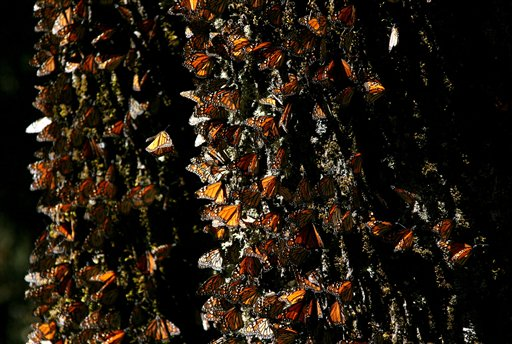
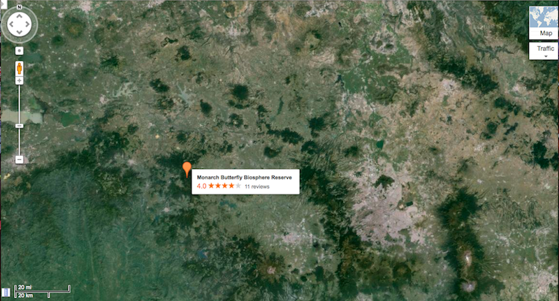
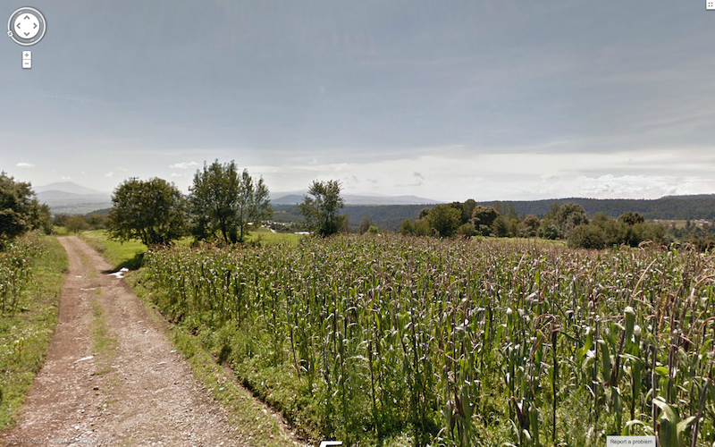
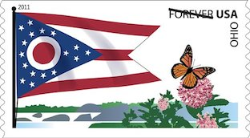

Millions of Monarch butterflies may no longer be migrating to Mexico for the winter as they do annually, the Associated Press reports. Not only have their numbers steeply declined, but also acres of forest, their habitat in the Mexican state of Michoacan have vanquished because of illegal logging. What used to be 44.5 acres of woods is down to just over the span of a football field. The destruction of their winter shelter along with the displacement of the milkweed plant on which they feed and lay their eggs is the cause of this loss.
 Left: Colony of Monarchs in tree habitat. Right: Illegal logging in Mexico's Monarch Butterfly Reserve. Photos by the Associated Press.
Even though the Monarch is not at risk of extinction since they exist in other parts of the world, environmentalists are still working to preserve the phenomenon that is their migration. World Wild Life promotes good forest management and sustainable tourism. Mexican police try to protect the Monarch Butterfly Biosphere Reserve (and tourist attraction) in the Michoacan pine and fir forests. Still, trees are continuously cleared for cultivation. The deforestation can be seen in the Google map below, which pinpoints the reserve and largely the area where the Monarchs migrate.

Map of the Mexican state of Michoacan. Photo by AP.
Google Street View image from a town approximately 2 miles from the Monarch Reserve.
The Rosario mountains can be seen beyond the fields. Photos by AP.
Symbolism
The Monarch is the symbol of the state of Michoacan. Their arrival is expected and celebrated each year in Mexico on November 2, on the national holiday of the Day of the Dead. On that day they represent the cycle of life. In her book, Culture Smart!, Susan Rodrigues writes:
Believed since ancient days to give flight to the spirit, the Monarch fly by the millions to Mexico from near and far. These winged creatures of transformation, long associated with departed warriors, come at a time when Mexicans express their heartfelt fears, joys, sorrows and hopes [through Day of the Dead]. The mariposa magically remind all that life and death are cyclical, one forms the other. Just as butterflies are sure to return each year, families, friends and loved ones will meet again in Mexico.
The Monarch is the also a subject of admiration in the United States. In fact, it is the state insect of Alabama, Idaho, Illinois, Minnesota, and Texas. It once appeared hovering naturally over some milkweed on a forever stamp of the state flag of Ohio.

Ohio State Flag forever stamp. Photo by AP.
In 1990, it was nominated as the national insect of the U.S., but no cigar. The Monarch also symbolizes cooperation between the U.S., Mexico and Canada, agreed upon in the North American Free Trade Agreement, according to the AP. Mexico-US relations are rocky over border crossing and immigration policies, but the Monarch has become yet again a somewhat liasing symbol adopted as one of freedom and migration by a group of about 30 undocumented immigrant activists who set out to protest deportations in Arizona on the UndocuBus. NAFTA was signed 20 years ago and this year also marks the Monarchs' 18th annual migration. Their mysterious migration is the subject of nearly 40 years of investigation by Dr. Freud Urquhart, which is covered in the 2012 documentary, Flight of the Butterflies. On the film's website, it says one way to help prevent the disappearance of the butterflies is by planting garden with milkweed plants.
Steps to Planting a Butterfly Garden
Choose your planting site by considering availably sunlight, foot traffic, and vulnerability.
Decide whether to start from seeds or with potted plants. It takes 4-6 weeks for seeds to germinate and for seedlings to be ready for transplanting.
Choose the plants that you will use. It's best to plant native species. Look in seed catalogs, gardening magazines and books about butterfly gardening for tips on what will work best in your area.
Include plants the butterfly will need at all four stages of its life cycle. The egg and larvae stage are restricted to species of milkweed, while adults feed on flowers that are fragrant, rich in nectar, and large enough for the butterfly to land on. Any yellow, pink, orange or purple nectar-producing flower will do.
Buy seeds. You may want to plan to use a combination of seeds and purchased plants. Plants should not be purchased until it is time to plant the garden.
Plant seeds. Punch a small hole in the bottom of your container (yogurt containers, foam egg cartons or other containers), fill with soil, bury seeds and place containers on trays to catch extra water.
Prepare the soil. Turn it over and add some fertilizer.
Plant seedlings outdoors. Make sure danger of frost is past.
Apply mulch to prevent soil erosion, maintain soil moisture and slow weed growth.
Maintain garden: watering, weeding and replacing mulch.